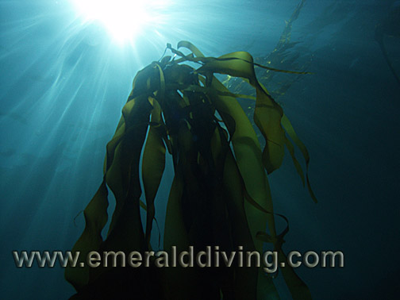
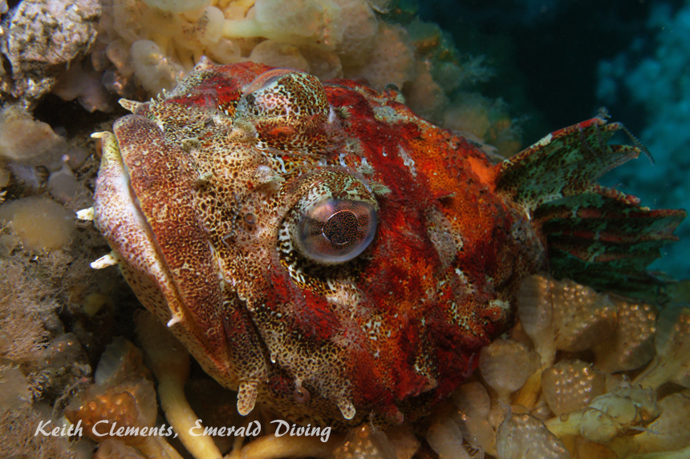
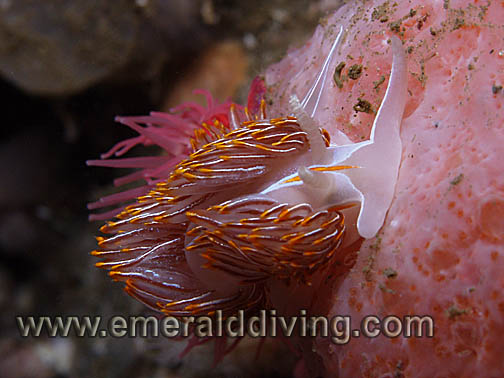

©2010 Emerald Diving, All Rights Reserved
Dive Reports
Emerald Diving
Explore the coastal and inland waters of
Washington and BC
Explore the coastal and inland waters of
Washington and BC
Emerald Diving
Explore the coastal and inland waters of
Washington and BC
Explore the coastal and inland waters of
Washington and BC
Emerald Diving
Explore the coastal and inland waters of
Washington and BC
Explore the coastal and inland waters of
Washington and BC


I was excited about this trip when I planned it in December of last year. Currents were PERFECT on paper - a miniscule 0.4 knot flood turning to a light 0.8 knot ebb through the main part of the day. We wouldn't even need to get up early to catch an early morning slack! Little did I know that this trip would turn into a personal dive charter.
Jon and I embarked on our first Neah Bay trip of the year on a Thursday night. On the drive to Neah Bay we discussed (OK, complained) that we hadn't hit ideal conditions at Neah Bay in years. Most of our trips to Neah Bay involve substantial wind or 4-8 foot swell - or both. We were confident we would hit the jackpot on one of these trips, but when???
We arrived in Sekiu by 8:30 PM and started to get gear ready for the next day's adventure. Jon was diving his backup suit as the zipper on his regular suit was shot. Jon noted that one of the wrist seals looked sketchy, so out came the tube of Aquaseal.
Jon and I embarked on our first Neah Bay trip of the year on a Thursday night. On the drive to Neah Bay we discussed (OK, complained) that we hadn't hit ideal conditions at Neah Bay in years. Most of our trips to Neah Bay involve substantial wind or 4-8 foot swell - or both. We were confident we would hit the jackpot on one of these trips, but when???
We arrived in Sekiu by 8:30 PM and started to get gear ready for the next day's adventure. Jon was diving his backup suit as the zipper on his regular suit was shot. Jon noted that one of the wrist seals looked sketchy, so out came the tube of Aquaseal.
Neah Bay: July 10-11, 2008
We saw only one whale this trip, but did find two sea-otters amongst the rocks on the west side of Tatoosh Island. I also noted an usually high number of puffins. However, the strangest event was two huge rafts of common muerres floating a hundred yards offshore on either side of Tatoosh Island. These rafts contains thousands of bird huddled closely together and squaking loudly. It was quite a convention - or party - or whatever sea bird do.
I reluctantly left Neah Bay and the excellent diving conditions late Saturday afternoon, although I did get 6 outstanding boat dive in during the two days we were there. The abundance of sunshine and clear water resulted in only striking my HID light on two dives - and one time it was to peak in a cave at Duncan Rock. Tasting the ideal conditions left me hungry for more and anxious to come back in a month. And next time I'm bringing extra seals.
I reluctantly left Neah Bay and the excellent diving conditions late Saturday afternoon, although I did get 6 outstanding boat dive in during the two days we were there. The abundance of sunshine and clear water resulted in only striking my HID light on two dives - and one time it was to peak in a cave at Duncan Rock. Tasting the ideal conditions left me hungry for more and anxious to come back in a month. And next time I'm bringing extra seals.

The Neah Bay welcoming committee: The seemingly ever present and naturally curious black rockfish. This photo was taken at Mushroom Rock on a sunny day with excellent water quality. The water even looks blue.

Bull kelp at Mushroom Rock. Spectacular vis and spectacular diving.

Opalescent nudibranch (Hermissenda crassicornus) cruising over a red ascidian at Duncan Rock
Pacifc blue mussels - Duncan Rock The mussels are over 8" in length!

Red Irish lord laying in wait amongst paddle ascidians at Farwest Ravine on Tatoosh Island.




The next morning we towed the boat to Neah Bay, launched, and headed for the cape. When we rounded Waadah Island I immediately noted a substantial swell and blowing wind. Looks like today wasn't going to bring perfect diving conditions either. We checked out the south side of Tatoosh Island, but the wind and swell persuaded me to look elsewhere. I ended up jumping in at my old standby, Mushroom Rock. Although a moderate swell was breaking on the rocks to the west, the bright sunshine and clear water made for an outstanding dive. I didn't even strike my HID dive light.
I surfaced after an hour to find the 4-6 foot swell and wind absent. It was like magic! We didn't see the wind or a swell of more than 3' the rest of the trip. These were the best diving conditions we had seen in years.
We ventured back to the south side of Tatoosh Island where Jon eagerly geared up and jumped in. He surfaced not two minutes later and signaled he had blown out his neck seal. With no backup suit, Jon's diving was over before it even started. I usually bring extra seals, but had just put new seals on my backup suit so left the extra seals at home. We talked about different options since Jon couldn't dive. We decided to stay two days and go home a day early. I had my very own boat bitch - it was just like Christmas! I finished the day with spectacular dives at Tatoosh Canyon and Duncan Rock.
I did a shore dive at Sekiu late that evening. My intent was to get silverspotted sculpin photos, but the swell made the task of trying to photograph the small fish lying on swaying eelgrass a tough challenge. The swell also dropped the vis to 5-10 feet. During the dive I encountered an unusual predatory fish laying dead in 10 feet of water. It had a slender body about 5' long, cropped dorsal, sharp beak, and forked tailfin. It had not been dead long - maybe a few hours. I thought it might be a wahoo, but in the poor vis and swell it was hard to tell. I took a very bad pic of the fish's head. Jeff Christiansen from the Seattle Aquarium later identified the fish as lancetfish - a deep water hunter that is known to occasionally come into shallow waters to die.
The suberb diving conditions held through the next day. I started Saturday with an outstanding dive along the rock canyons on the south end of Cape Flattery. At slack, we checked out the very western point of the rocks to the west of Tatoosh - the most western point in the continental US. This far western reach is usually a cauldron of current and swell - but not today. The swell was about a quarter of it's normal self, and the current was nowhere to be found. I seized the opportunity and jumped in. I spent my dive exploring a fantastic canyon that runs to the west with 40' walls on either side. The canyon floor was lined with broken shells and huge boulders. Schools of fish were hovering about the boulders. I was easily able to work my way down to 100 feet, then reverse course and end up doing my safety stop taking in the multitude of colorful invertebrates that line the wall by the point - simply fantastic!!
I ended the day with another dive in Tatoosh Canyon taking pictures of ascidians that I hoped would help Dr. Lambert, a local tunicate expert.
I noted a large orange balloon floating on the surface about a mile east of Duncan Rock during our return trip to Neah Bay. As we got closer, I realized the orange balloon was a yelloweye rockfish that a fishermen had caught and released at Duncan Rock. Yelloweye rockfish are endangered and cannot be retained by fishermen. The problem is once the fish is brought to the surface from any substantial depth, their air-bladder expands and the poor fish cannot re-submerge.
As we approached the stranded fish, it dove for the bottom. It quickly re-emerged on the surface seconds later with its over-expanded bladder. I grabbed the 24" fish by the tail and looked in its mouth as it lay in the water - the air bladder was exposed in its mouth, but it was not inflated. Knowing the fish had no chance as is, I took out a sharp knife with a pointy end and carefully cut a very small hole low on the yelloweye's belly. It was actually very difficult to get through the rockfish's tough skin. After cutting a 1/8" slit in the belly, I pressed on it's stomach with my free hand and air started to come out. Jon then came over and used two hands to squeeze all the air out of the bladder as I held the fish in the water. We then watched as the yelloweye turned tail and successfully submerged to the depth. Our first emergency rockfish bladderechtemy.
Urticina anemones here grow as big as dinner plates.
China Rockfish on defense at Tatoosh Canyon
Pilose doris - Tatoosh Canyon
A species I rarely note.
A species I rarely note.